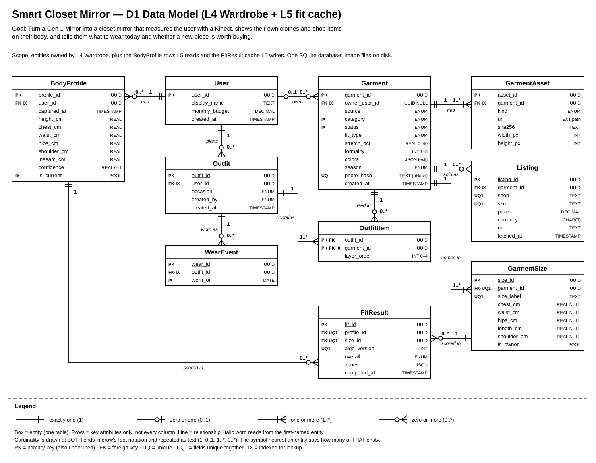

Project title: Smart Closet Mirror
Scope. This document details L4 Wardrobe (owner: Jace Schubert), which holds the data model, and L5 Try-on (owner: Arya Garg), whose fit check and live rendering break the product if they are slow or wrong; L1 Capture, L2 Perception, L3 Body, L6 Decision, L7 Connectors, L8 Presentation, and the shared planes are deferred to D2.
| Item | Meaning |
|---|---|
| Figure 1 — box | An entity, stored as one table. The top row is the entity name; the rows below are the key attributes that affect behaviour, not every column. The right-hand column gives each attribute's type. |
| Figure 1 — line | A relationship between two entities. The italic word on the line reads from the first-named entity to the second (for example, "Garment comes in GarmentSize"). |
| Figure 1 — keys | PK = primary key, also underlined. FK = foreign key. UQ = unique. UQ1 = these fields are unique together. IX = indexed for fast lookup. A tag like FK·IX means both. |
| Figure 1 — cardinality | Drawn at both ends of every line in crow's-foot notation and repeated as text. Two bars = exactly one (1). Circle + bar = zero or one (0..1). Bar + crow's foot = one or more (1..*). Circle + crow's foot = zero or more (0..*). The symbol next to an entity says how many of that entity relate to one of the other. |
| Types and units | UUID = 128-bit id as text. All lengths are centimetres (_cm), all times are UTC (RFC 3339 in HTTP, nanoseconds since epoch on the bus), prices are decimal strings with an ISO 4217 currency code. |
| Interface IDs (I1–I17) | Same numbering as D0. D1 does not add or remove interfaces. |
fit_report/1 (part 5).
Figure 1. Source: Design_Diagrams/D1_data_model.drawio. Realistic size: one household, up to 4 users, about 300 closet garments, about 2,000 cached shop items, about 6 sizes each (≈ 14,000 GarmentSize rows), and up to ≈ 56,000 FitResult rows.
| Decision | Why |
|---|---|
| GarmentSize is an entity, not columns on Garment | A shop item comes in several sizes, each with its own measurements, and the fit check (A1) scores every size to recommend one. A closet item keeps one row with is_owned = true. Size values store the body measurement the size is made for, as shop size charts do. |
| BodyProfile is an entity, not columns on User | Users re-measure. Keeping each profile lets a FitResult point to the exact measurements it used; is_current marks the one in use. |
| GarmentAsset is an entity, not a photo column | One garment has several files (original photo, cutout, anchor points), each with its own hash and size. Files stay on disk; the table holds paths only, which keeps the database small. |
| Listing is an entity, Garment → Listing is one-to-many | The same product can be sold by several shops at different prices, and prices change (fetched_at). Each listing is one shop's offer for one product, so it is not many-to-many. |
| Outfit ↔ Garment is many-to-many through OutfitItem | An outfit has several garments and a garment appears in many outfits. The junction table also holds layer_order (shirt under jacket), which L5 needs to draw layers in order. |
| User → Garment is 0..1 to 0..* | A closet garment has exactly one owner. A shop garment has none (owner_user_id = NULL), so one table serves both and the fit check treats them the same. Shared garments between household members are out of scope. |
WearEvent is an entity, not a last_worn column | L6 needs history ("not worn in the last 7 days", "worn 3 times this month"), not just the last date. |
| FitResult is a cache entity | Scoring is cheap for one garment but L6 asks "what in my closet fits?" across thousands of sizes. Unique on (profile_id, size_id, algo_version): a new profile or a new algorithm version simply misses the cache. |
| colors is an attribute (JSON list), not an entity | Only used to filter, never joined, and at most 5 values per garment. |
| Enum values | category {top, bottom, dress, outer, shoes}; status {active, incomplete, archived}; fit_type {slim, regular, relaxed}; source {closet, catalog}; asset kind {photo, cutout, anchors}; overall {tight, good, loose, unknown}. Stored as text with CHECK constraints. |
| Index | Why |
|---|---|
| Garment (owner_user_id, status, category) | The closet list query runs on every phone and glass screen load. |
| Garment (photo_hash) UNIQUE | Duplicate upload check for I2 (409) in O(log n) instead of a full scan. |
| Listing (shop, sku) UNIQUE | L7's catalog feed (I16) upserts by shop + sku. |
| GarmentSize (garment_id, size_label) UNIQUE | Fetching all sizes of a garment for A1; also blocks duplicate size labels. |
| FitResult (profile_id, size_id, algo_version) UNIQUE | Cache lookup in A1. This is the hottest read in L5. |
| BodyProfile (user_id, is_current) | Fetching the current profile for each try-on request. |
| WearEvent (outfit_id), (worn_on); OutfitItem (garment_id) | L6's last-worn and "outfits using this garment" queries. |
| Not indexed: colors, season, formality | Scanning about 300 closet rows takes under 1 ms; an index would only slow writes. |
Relational model: SQLite 3 in WAL mode, with image files on disk. The data has real relationships with cardinality, and the design depends on uniqueness rules (duplicate photos, shop upserts, the fit cache), which a relational database enforces for us. A JSON or document store would push those checks into our code and would handle two writers poorly (the phone upload API and L7's catalog feed). A database server such as PostgreSQL is not needed for one household on one PC; SQLite is a single file with no server to run, and WAL mode lets L5 read while L4 writes. At 100× our size (≈ 1.4 M sizes, 5.6 M fit rows) the indexed lookups above stay in the millisecond range.
Two computations break the product if they are wrong or slow: A1 decides whether clothes fit, and the buy-or-skip verdict rests on it. A2 draws the garment on the user every frame; if it lags, the mirror stops feeling like a mirror.
profile: BodyProfile {height_cm, chest_cm, waist_cm, hips_cm, shoulder_cm, inseam_cm: float; confidence: float 0–1}; garment: {category: enum, fit_type: enum, stretch_pct: float 0–40}; sizes: list[GarmentSize], each {size_id: UUID, size_label: str, chest_cm, waist_cm, hips_cm, length_cm, shoulder_cm: float | None}; bands: EaseTable, a versioned config mapping (category, fit_type, zone) → (min_ease_cm: float, max_ease_cm: float).FitEvaluation {recommended_size_id: UUID | None; sizes: list of {size_id: UUID, zones: dict[zone, enum{tight, good, loose, unknown}], ease_cm: dict[zone, float], overall: enum, score: float ≥ 0}; confidence: float 0–1; algo_version: int}.PROFILE_LOW_CONFIDENCE, and L8 asks the user to repeat the T-pose.LivePose (I10) {seq: uint64, ts: int64 ns, joints: 20 × {x, y, z: float32 m in camera space, conf: float32 0–1}}; mask: uint8[480][640] (1 = person); rgb: uint8[480][640][3] (shared memory from I7).cutout: uint8[H][W][4] RGBA, H, W ≤ 1024; anchors: dict[name, (u, v) float px] for neck, shoulders, elbows, wrists, hips, knees, ankles; fit: FitEvaluation from A1; layer_order: int 0–4. Constants: Kinect intrinsics fx, fy, cx, cy: float.frame: uint8[720][1280][3], mirrored, passed to the H.264 encoder (I4).| Piece | Build / reuse | Library or service | Licence | Checks: maturity · performance · fit | Reason |
|---|---|---|---|---|---|
| L4 Wardrobe | |||||
| Phone-facing HTTP API (I2) | Reuse | FastAPI + Uvicorn | MIT / BSD-3 | Released 2018, very widely used · thousands of requests/s against our handful · Python, async | Validation and API docs come built in. |
| Input and record validation | Reuse | Pydantic v2 | MIT | Mature · Rust core, fast · FastAPI uses it already | One schema shared by the API and the bus messages. |
| Database engine | Reuse | SQLite 3 (Python sqlite3) | Public domain | Decades old · far beyond our size · single file | No server to run or back up. |
| Data access and schema migrations | Reuse | SQLAlchemy 2 + Alembic | MIT | Mature · light overhead · works with SQLite | Schema changes are versioned in git. |
| Image decode, resize, EXIF rotation | Reuse | Pillow | MIT-CMU (HPND) | Mature · one photo per upload, fast enough · standard | Never hand-parse image formats. |
| Duplicate photo detection | Reuse | ImageHash (pHash) | BSD-2 | Stable, small · microseconds per hash · catches re-saved copies | Exact byte hashes miss recompressed photos. |
| Garment cut-out (background removal) | Reuse | rembg with the U²-Net model | MIT (code), Apache-2.0 (model) | Active project · ≈ 1 s per photo on CPU at upload time · runs offline | Photos never leave the house, which our privacy constraint requires. |
| Garment anchor points | Build | — (OpenCV for contours) | Apache-2.0 | No library finds our anchor set on flat-lay photos | Contour heuristic, plus the user drags dots on the phone to correct it. |
| Phone authentication (device pairing) | Reuse | FastAPI HTTPBearer + Python secrets + argon2-cffi | MIT / PSF | Mature · cheap · standard bearer-token pattern | No hand-rolled crypto or token handling. |
| Dates and time zones | Reuse | Python datetime + zoneinfo | PSF | Standard library | Never hand-parse dates. |
| Message bus client | Reuse | pyzmq (libzmq) | BSD-3 / MPL-2.0 | Mature since 2010 · microsecond latency · pub/sub and request/reply | Carries I11 and I12 (see part 6). |
| L5 Try-on | |||||
| Fit evaluation (A1) | Build | NumPy for vector maths | BSD-3 | NumPy is mature and fast; the rules are ours | No library knows our ease bands; this is the project-specific core. |
| Ease band table | Build (config) | PyYAML to load it | MIT | Mature · read once at start-up | The team can tune the bands without code changes. |
| Joint smoothing | Build | — (One Euro filter, published method) | — | About 40 lines · microseconds | Too small to justify a dependency; behaviour is documented in the paper. |
| Garment mesh triangulation | Reuse | SciPy Delaunay (Qhull) | BSD-3 | Mature · once per garment, milliseconds | Standard, well tested. |
| 2-D skinned warp and drawing (A2) | Build on reuse | ModernGL (OpenGL 3.3) | MIT | Active · GPU speed · works with NumPy arrays | The warp is ours; GPU access is not worth writing. |
| Mask clean-up, colour conversion, resizing | Reuse | OpenCV (opencv-python-headless) | Apache-2.0 | Industry standard · SIMD-optimised | Fast, well-tested image operations. |
| H.264 encode + MPEG-TS stream (I4) | Reuse | FFmpeg through PyAV, h264_nvenc encoder | PyAV BSD-3; FFmpeg LGPL-2.1 | Industry standard · NVENC encodes 720p in < 5 ms · Media3 plays MPEG-TS | Fallback libx264 is GPL-2.0, which is acceptable because we do not distribute the build. |
| Streaming HTTP response to the Mirror | Reuse | FastAPI StreamingResponse | MIT | Same stack as the L4 API | One web server, not two. |
| Neural image try-on | Rejected | VITON-HD / HR-VITON | CC BY-NC-SA | Research code · hundreds of ms per frame · needs studio-style photos | Too slow for 30 fps, and the licence forbids commercial use. |
| Tests | Reuse | pytest | MIT | Standard | Unit tests for A1's edge cases. |
L4 serves the phone over HTTPS on the home network (I2). L4 and L5 also answer request/reply methods on the message bus (I11, I12). Every HTTP call needs Authorization: Bearer <device token>. Every error, HTTP or bus, uses one shape: {"error": {"code": string, "message": string, "fields": object | null}}.
| Endpoint / method | Inputs (type, required?, valid range) | Output (shape, types, units) | Errors (code — when) |
|---|---|---|---|
| POST /api/v1/garments (L4, I2) multipart/form-data | photo file, required, JPEG or PNG, ≤ 8 MB, ≥ 400 × 400 px · category enum, required · size_label string, optional, 1–12 chars · fit_type enum, optional, default regular · stretch_pct float, optional, 0–40, default 0 · formality int, optional, 1–5, default 3 · brand string, optional, ≤ 60 chars | 201 Garment {garment_id: UUID, status: "active" | "incomplete", category, size_label: string | null, fit_type, stretch_pct: float %, formality: int, colors: string[] (detected), assets: [{kind, url: string}], created_at: RFC 3339 UTC}. Location header = garment URL. | 400 VALIDATION_FAILED — a field is missing or out of range (fields lists which) · 401 UNAUTHORIZED — token missing or revoked · 409 DUPLICATE_PHOTO — pHash within distance 6 of a stored photo (the response carries that garment_id) · 413 PHOTO_TOO_LARGE · 415 UNSUPPORTED_MEDIA — not JPEG/PNG · 503 STORAGE_UNAVAILABLE — disk full or database busy for > 2 s (Retry-After header) |
| GET /api/v1/garments (L4) | owner UUID, optional, default = caller · category enum, optional · status enum, optional, default active · limit int, optional, 1–100, default 50 · cursor string, optional | 200 {items: Garment[], next_cursor: string | null}, newest first | 400 BAD_QUERY — unknown enum value or limit out of range · 401 UNAUTHORIZED |
| GET /api/v1/garments/{garment_id} (L4) | garment_id UUID, required (path) | 200 Garment plus sizes: [{size_id: UUID, size_label, chest_cm, waist_cm, hips_cm, length_cm, shoulder_cm: float cm | null, is_owned: bool}], listings: [{shop, sku, price: decimal string, currency: ISO 4217, url, fetched_at}], anchors: {name: [u, v] px}. ETag header. | 401 UNAUTHORIZED · 404 NOT_FOUND — no such garment, or it belongs to another user |
| PATCH /api/v1/garments/{garment_id} (L4) | JSON, any of: size_label, fit_type, stretch_pct (0–40), formality (1–5), sizes (list as in GET), anchors {name: [u, v]} with u, v inside the cutout · header If-Match ETag, required | 200 updated Garment. A change to sizes or fit_type deletes that garment's FitResult rows. | 400 VALIDATION_FAILED · 401 · 404 NOT_FOUND · 412 VERSION_CONFLICT — ETag is stale (someone else edited it; re-fetch and retry) |
| DELETE /api/v1/garments/{garment_id} (L4) | garment_id UUID, required | 204 no body. Soft delete: status = archived, files kept 30 days. | 401 · 404 NOT_FOUND |
| wardrobe.get (L4, bus, I11) | {schema: "wardrobe_get/1", garment_id: UUID, required} | {schema: "garment_asset/1", garment_id, category, fit_type, stretch_pct: float %, sizes: [as GET], cutout_uri: string, anchors: {name: [u, v] px}} | NOT_FOUND — unknown id · INCOMPLETE — cutout or anchors not ready yet (L5 reports the garment as unavailable) · timeout 500 ms → L5 treats it as unavailable |
| tryon.request (L5, bus, I12) | {schema: "tryon_request/1", request_id: UUID, required · user_id: UUID, required · garment_ids: UUID[], required, 1–4 items · stream: bool, optional, default true} | {schema: "fit_report/1", request_id, profile_id: UUID, algo_version: int, results: [{garment_id, recommended_size_id: UUID | null, confidence: float 0–1, sizes: [{size_id, size_label, overall: enum, score: float ≥ 0, zones: {zone: enum}, ease_cm: {zone: float cm}}]}], streaming: bool, generated_at: int64 ns} | NO_CURRENT_PROFILE — user has never done the T-pose · PROFILE_LOW_CONFIDENCE — confidence < 0.7 (L8 asks for a new T-pose) · GARMENT_NOT_FOUND — fields lists the ids · TOO_MANY_GARMENTS — more than 4 · RENDER_BUSY — another stream is live; the fit is still returned with streaming = false · L6 applies its own 1.5 s timeout (D0, I12) |
POST /api/v1/garments HTTP/1.1 Host: brain.local:8443 Authorization: Bearer dv_7Hq2... Content-Type: multipart/form-data; boundary=XyZ --XyZ Content-Disposition: form-data; name="photo"; filename="shirt.jpg" Content-Type: image/jpeg (binary JPEG, 2.1 MB) --XyZ Content-Disposition: form-data; name="category" top --XyZ Content-Disposition: form-data; name="size_label" M --XyZ--
{
"garment_id": "2c9e7d41-0b6a-4f3e-8e55-a1d2c3b4e5f6",
"status": "incomplete",
"category": "top",
"size_label": "M",
"fit_type": "regular",
"stretch_pct": 0,
"formality": 3,
"colors": ["navy", "white"],
"assets": [
{ "kind": "photo", "url": "/files/2c9e7d41/photo.jpg" },
{ "kind": "cutout", "url": "/files/2c9e7d41/cutout.png" }
],
"created_at": "2026-11-10T18:42:07Z"
}
Status is "incomplete" until the user confirms the anchor points and a size chart is attached (PATCH).
Versioning. The HTTP API is versioned in its path (/api/v1) and every bus message carries a schema name with a version (fit_report/1). Adding an optional field is not a breaking change. Removing or renaming a field, changing a type or unit, making an optional input required, adding a value to an enum that callers switch on, or changing what an error code means is breaking: it gets a new version (/api/v2, fit_report/2), and the old version is served until the next milestone.
Each paragraph covers the five criteria from class in this order: team skill fit, licensing, community support, performance, and cost and hosting.
Database — SQLite 3 (WAL mode) with image files on disk. Team skill fit: everyone has written SQL, and SQLite needs no administration, so Jace can own L4's data without learning server setup. Licensing: public domain, no conditions. Community support: one of the most widely deployed databases, with full support in Python's standard library, SQLAlchemy, and Alembic. Performance: indexed lookups on our ≈ 70,000 rows take well under a millisecond; WAL mode lets L5 read while L4 writes. Cost and hosting: free, and it is one file on the brain PC that we back up by copying. Passed over: PostgreSQL, which adds a server process, users, and backups to manage for no benefit at one household's scale; we can move to it later through SQLAlchemy if we ever need several machines.
Backend language and framework — Python 3.12 with FastAPI; heavy work in NumPy, OpenCV, and ModernGL. Team skill fit: Python is the language all four of us have used in coursework, and the libraries for imaging and maths are Python-first. Licensing: Python is PSF-licensed, FastAPI is MIT, and NumPy, SciPy, and OpenCV are BSD or Apache, so all are permissive. Community support: FastAPI and the scientific Python stack are among the most used and best documented in their areas. Performance: Python alone is slow per frame, so the per-pixel work runs in compiled libraries (NumPy, OpenCV) and on the GPU (ModernGL); Python only coordinates. A2's CPU part is about 400 point transforms per frame. Cost and hosting: free, and it runs on the same Ubuntu PC as everything else. Passed over: Node.js with Express, which would serve HTTP well but lacks mature equivalents of NumPy, OpenCV, and the Kinect bindings, so L1–L5 would end up in a second language anyway. Also passed over: C++ throughout, which is faster but would slow a student team down far more than the per-frame budget requires.
Front ends — plain HTML, CSS, and ES5 JavaScript for the glass (WebView 44); a mobile web page for the phone. Team skill fit: basic web development is familiar to the whole team, and no build tools are needed. Licensing: the pages are our own code with no framework licence; the phone page uses only browser APIs (camera capture, file upload). Community support: standard web APIs with complete documentation; we test against WebView 44's limits early. Performance: the glass only draws cards and receives JSON over a WebSocket, and the video plays in Media3, so the Mirror's weak processor is not a bottleneck. Cost and hosting: served by the same FastAPI process on the brain PC, so there is no app store fee and no separate hosting. Passed over: React with a Babel build (it needs transpiling down to ES5 and polyfills, and adds a large bundle for an old WebView) and a native React Native phone app (app store setup and two codebases for a page that only uploads photos).
Messaging — ZeroMQ (pyzmq) with JSON messages, and MessagePack for per-frame pose. Team skill fit: a small API with publish/subscribe and request/reply sockets; the team learns two socket types instead of a broker to run. Licensing: pyzmq is BSD-3 and libzmq is MPL-2.0, which allows our use. Community support: mature since 2010 with a well-known guide and active maintainers. Performance: microsecond latency within one machine, with no broker hop, which matters for the 30 Hz pose stream (I10) in a 250 ms budget; "keep newest only" settings stop stale frames piling up. Cost and hosting: a library, not a service, so there is nothing extra to install or run. Passed over: MQTT with a Mosquitto broker, which suits many small devices, but adds a broker process and a network hop that our single-machine design does not need. Also passed over: Redis pub/sub, which drops messages when a subscriber is slow and adds a server.
Hardware platform and hosting — an Ubuntu 24.04 LTS desktop with an NVIDIA GPU at home, a Kinect 360 over USB 2.0, and the Gen 1 Mirror on home Wi-Fi. Team skill fit: the team already uses Linux for coursework, and Ubuntu is the platform the Kinect driver (libfreenect) and NVIDIA's encoder are documented on. Licensing: Ubuntu is free; libfreenect is dual Apache-2.0/GPL-2.0; NVIDIA's driver is proprietary but free to use. Community support: Ubuntu LTS gets security updates until 2029, and libfreenect has years of Kinect 360 support threads. Performance: a mid-range GPU (GTX 1660 or RTX 3050 class) draws A2 in about 2 ms and encodes 720p H.264 in under 5 ms, leaving most of the 80 ms L5 budget free. Cost and hosting: a used Kinect 360 and power adapter cost about $35, the Mirror is already owned, and the PC is team-owned by Clare ; there are no cloud costs, and body data never leaves the house. Passed over: an NVIDIA Jetson Orin Nano (smaller, but about $500 and with weaker libfreenect support on ARM) and a cloud GPU server (monthly fees, extra network delay, and body images leaving the home network).